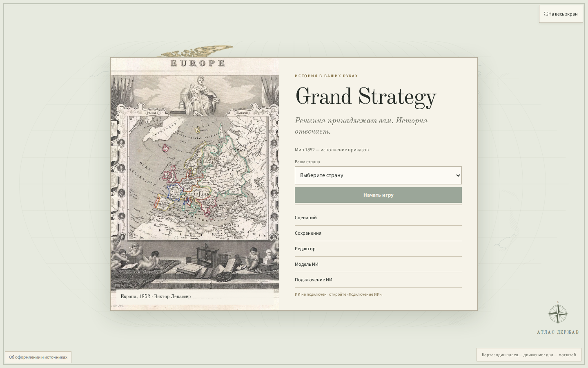
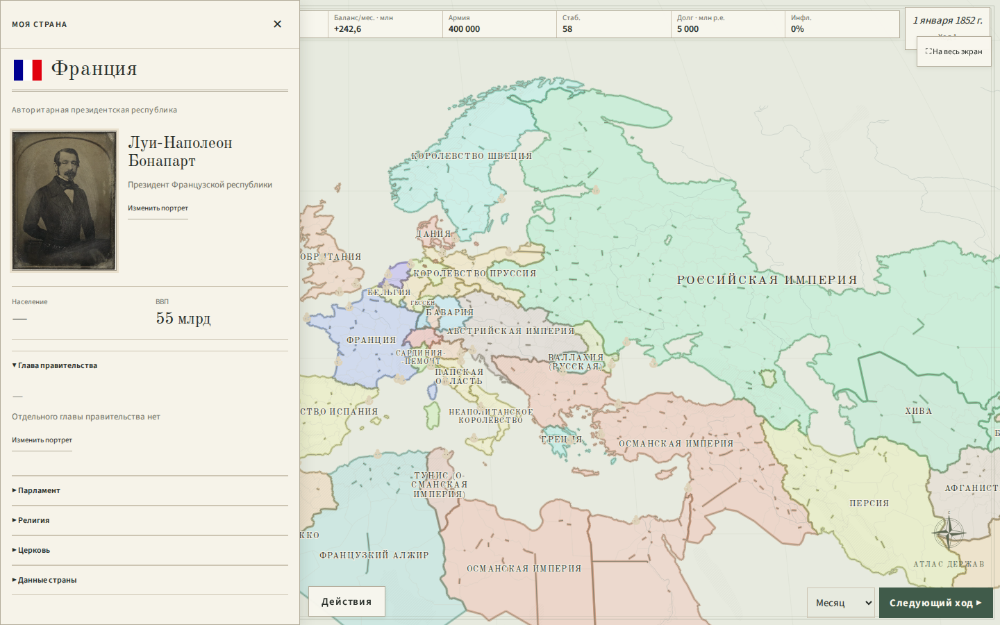
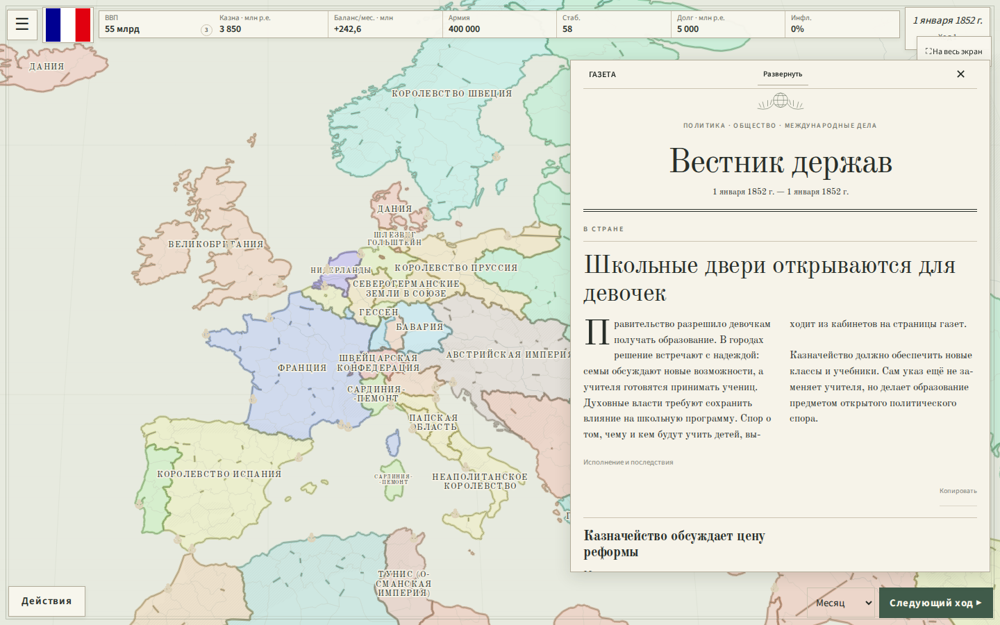
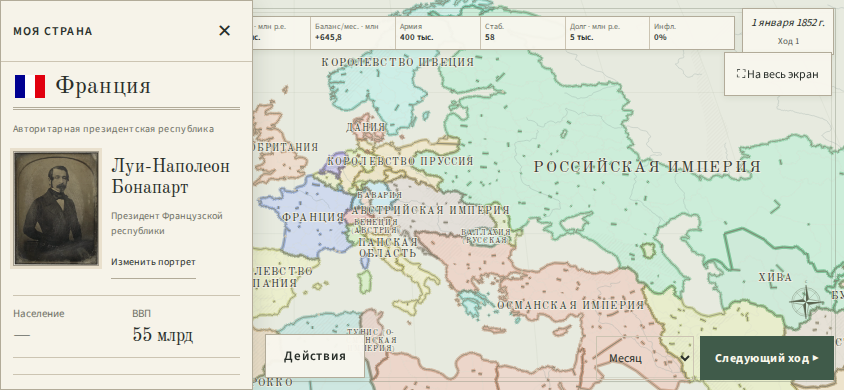
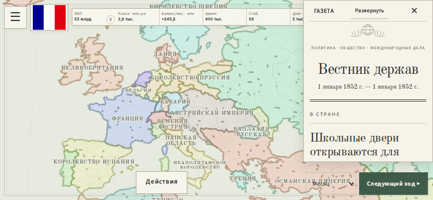

Атлас держав
и политическая газета
Новое оформление работающей игры: печатная карта с цветными окантовками, компактные страницы государств, дипломатическая переписка и газета с главной статьёй и колонками.
Стартовый экран

Карта и страна

Подлинные портреты привязаны к личности персонажа. При смене правителя старый портрет исчезает. Портреты, созданные в игре, имеют приоритет. Для неизвестного персонажа показываются небольшие инициалы.
Газета

Текст на снимке — демонстрационный материал для проверки вёрстки. В игре газета использует события вашей партии. Техническая сводка и последствия сохраняются в раскрывающихся деталях.
На телефоне


Источники и материалы
- Луи-Наполеон, дагерротип 1851 года · BnF
- Николай I · Франц Крюгер, 1852
- Фридрих Вильгельм IV · Франц Крюгер
- Виктория · Винтерхальтер, 1843
- Франц Иосиф I · Миклош Барабаш, 1853
- Европа · Левассёр, 1852 — иллюстрация стартового экрана, а не игровые границы.
- Old Standard TT — историческая типографика, кириллица, SIL OFL.
- Source Sans 3 — управление и числовые данные, SIL OFL.
- Natural Earth, public domain — основные реки и области горных цепей. Это условный гравированный рисунок; высотная модель не используется.


Изображения — общественное достояние. Полные ссылки, авторы и лицензии: реестр материалов. Исторические изображения уменьшены и сохранены локально, без генеративной обработки.